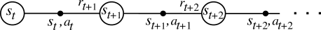
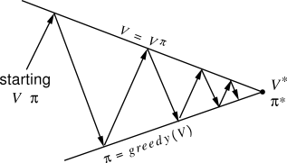
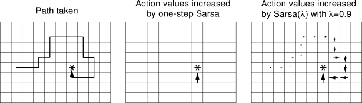
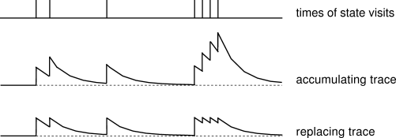

### Setup
(*Copy-pasted from Dynamic Programming demo*). This is a toy environment called **Gridworld** that is often used as a toy model in the Reinforcement Learning literature. In this particular case:
- **State space**: GridWorld has 10x10 = 100 distinct states. The start state is the top left cell. The gray cells are walls and cannot be moved to.
- **Actions**: The agent can choose from up to 4 actions to move around. In this example
- **Environment Dynamics**: GridWorld is deterministic, leading to the same new state given each state and action
- **Rewards**: The agent receives +1 reward when it is in the center square (the one that shows R 1.0), and -1 reward in a few states (R -1.0 is shown for these). The state with +1.0 reward is the goal state and resets the agent back to start.
In other words, this is a deterministic, finite Markov Decision Process (MDP) and as always the goal is to find an agent policy (shown here by arrows) that maximizes the future discounted reward. My favorite part is letting the agent find the optimal path, then suddenly change the reward of some cell with the slider and watch it struggle to reroute its policy.
**Interface**. The color of the cells (initially all white) shows the current estimate of the Value (discounted reward) of that state, with the current policy. Note that you can select any cell and change its reward with the *Cell reward* slider.
### Temporal Difference Learning
TD methods (for finite MDPs) are covered very nicely in **Richard Sutton's Free Online Book on Reinforcement Learning**, in this particular case [Chapter 6](http://webdocs.cs.ualberta.ca/~sutton/book/ebook/node60.html), but REINFORCEjs also implements many of the bells and whistles described in Chapters 7 (Eligibility Traces), Chapter 9 (Planning), and Chapter 8 (Function approximation and more generally Deep Q Learning).
Briefly, the core idea is to estimate the action value function \\(Q^\pi(s,a)\\), which is the expected discounted reward obtained by the agent by taking action \\(a\\) in state \\(s\\) and then following some particular policy \\(\pi(a \\mid s)\\):
$$
Q^\pi (s,a) = E\_\pi \\{ r\_t + \\gamma r\_{t+1} + \\gamma^2 r\_{t+2} + \\ldots \\mid s\_t = s, a\_t = a \\}
$$
The expectation above is really over two stochastic sources: 1. the environment and 2. the agent policy which in the general case is also stochastic. Unlike Dynamic Programming, Temporal Difference Learning estimates the value functions from the point of view of an agent who is interacting with the environment, collecting experience about its dynamics and adjusting its policy online. That is, the agent's interaction with the environment (which forms our training set) is a long sequence of \\(s\_t, a\_t, r\_t, s\_{t+1}, a\_{t+1}, r\_{t+1}, s\_{t+2}, \ldots \\), indexed by t (time):

However, unlike a standard Machine Learning setting the agent picks the actions, and hence influences its own training set. Fun! The core idea is to notice that the Q function satisfies the Bellman equation, which is a recurrence relation that relates the Q function at one action node \\((s\_t, a\_t)\\) to the next one \\((s\_{t+1}, a\_{t+1})\\). In particular, looking at the above diagram the agent:
1. The agent picked some action \\(a\_t\\) in state \\(s\_t\\)
2. The environment responded with some reward \\(r\_t\\) and new state \\(s\_{t+1}\\)
3. The agent then picks some new action \\(a\_{t+1}\\) from its current policy \\(\pi\\).
We can explicitly write out the expect reward of this behavior and express Q recursively based on itself:
$$
Q(s,a) = \sum\_{s'} \mathcal{P}\_{ss'}^a \left[ \mathcal{R}\_{ss'}^a + \\gamma \sum\_{a'} \pi(s',a') Q(s',a') \right]
$$
Where we see the two sources of randomness explicitly summed over (first over the next state, and then over the agent's current policy). Since this equation is expected to hold, our strategy is to initialize \\(Q\\) with some numbers (e.g. all zeros) and then turn this recurrence relation into an update. Of course, we don't have access to the environment dynamics \\(\mathcal{P}\\), but we can base the update on the agent's experience from interacting with the environment, which is at least a sample from this unknown distribution. Notice that we do have access to the policy \\(\pi\\) so we could in principle evaluate the second sum exactly, but in practice it is simpler (especially if your actions were continuous) to sample this part as well, giving rise to the **SARSA** (short for s,a,r,s',a', get it?) algorithm:
$$
Q(s\_t, a\_t) \leftarrow Q(s\_t, a\_t) + \alpha \left[ \underbrace{r\_t + \gamma Q(s\_{t+1}, a\_{t+1})}\_{target} - \underbrace{Q(s\_t, a\_t)}\_{current} \right]
$$
Here the parameter \\( \alpha \\) is the learning rate, and the quantity inside the bracket is called the **TD Error**. In other words the idea is to interact with the environment by starting with some initial \\(Q\\), using some policy \\(\\pi\\), and keeping track of a chain of (s,a,r,...). We then simply treat this as training data, and use online stochastic gradient descent to minimize the loss function, which in this case is the Bellman recurrence relation. Each time we perform the update to the Q function, we can also update our policy to be greedy with respect to our new belief about Q. That is, in each state the policy becomes to take the action that maximizes Q. This approach of starting with some value function and policy and iteratively updating one based on the other is the **policy iteration** scheme described in Sutton's book:

Now, **SARSA** is called an **on-policy** method because it's evaluating the Q function for a particular policy. It turns out that if you're interested in control rather than estimating Q for some policy, in practice there is an update that works much better. It's called **Q-Learning** and it has the form:
$$
Q(s\_t, a\_t) \leftarrow Q(s\_t, a\_t) + \alpha \left[ r\_t + \gamma \max\_a Q(s\_{t+1}, a) - Q(s\_t, a\_t) \right]
$$
This is an **off-policy** update because the behavior policy does not match the policy whose Q function is being approximated, in this case the optimal action-value function \\(Q^\*\\). Intuitively, the update looks *optimistic*, since it updates the Q function based on its estimate of the value of the best action it can take at state \\(s\_{t+1}\\), not based on the action it happened to sample with its current behavior policy. With this Gridworld demo as well, the Q-Learning update converges much faster than SARSA.
**Exploration**. The last necessary component to get TD Learning to work well is to explicitly ensure some amount of exploration. If the agent always follows its current policy, the danger is that it can get stuck exploiting, somewhat similar to getting stuck in local minima during optimization. One common and perhaps simplest way to ensure some exploration (and make all converge proofs work) is to make the agent's policy **epsilon-greedy**. That is, with probability \\(\epsilon\\) the agent takes a random action, and the remainder of the time it follows its current policy. Some usual settings for this parameter are 0.1, 0.2, or so, and this is usually annealed over the duration of the trianing time to very small numbers (e.g. 0.05 or 0.01, etc).
### TD Bells and Whistles
Looking at the options available to you in the spec for the demo, there are some usual suspects (whether we are using 'qlearn', or 'sarsa'), the discount factor `spec.gamma`, the exploration parameter `spec.epsilon`, and the learning rate `spec.alpha`. What is all the other stuff?
**Eligibility Traces**. The idea behind eligibility traces is to make the TD updates less local and diffuse them backwards through some part of the past experience. In other words, we're keeping a (decaying) trace of where the agent has been previously (the decay strength is controlled by a hyperparameter \\(\lambda\\)), and performing Q value updates not only on one link of the s,a,r,s,a,s,a,r.... chain, but along some recent history of it. This is justified by the fact that when the Q value changes for some state (s,a), then all the other states immediately before it are also influenced due to their recursive dependence. For example, if the agent discovers a reward on some Gridworld square, it would not only update the Q of the immediately previous state, but also several several states it has seen leading up to this state. Use `spec.lambda` to control the decay of the eligibility trace, where 0 means no traces should be used (default).

Image taken from Sutton's book, showing the basic idea of eligibility traces.
Additionally, there is one more option to either use replacing, or accumulating traces which can be controlled with `spec.replacing_traces` (default is true). The difference is only with how the trace is accumulated when the same state is visited multiple times (incremented each time, or reset to a fixed maximum value). Again, a nice diagram from Sutton's book shows the strength of the trace for a single state as it is repeatedly visited, and gets the point across nicely:

**Planning**. TD methods are by default called **model-free**, because they do not need to estimate the environment model. That is, we do not need to know the transition probabilities \\(\mathcal{P}\\), or the rewards assigned by the environment to the agent \\(\mathcal{R}\\). We only observe samples of these values and distil their sufficient statistics in the action value function \\(Q\\). However, a model of the environment can still prove extremely useful. The basic idea in planning is that we will explicitly maintain a model of how the environment works (trained again, from observation data). That is, what states and actions lead to what other states, and how the rewards are assigned. In other words, based on our training data trace \\(s\_t, a\_t, r\_t, s\_{t+1}, a\_{t+1}, r\_{t+1}, s\_{t+2}, \ldots \\) , the agent keeps track of the environment model:
$$
Model(s,a) \leftarrow s', r
$$
In this Gridworld demo for example, it's just a simple array lookup for all pairs of \\(s,a\\). The fact that this Gridworld is deterministic helps, because these are all just fixed, unchanging values that are easy to observe once and then remember. This model is very useful because it can help us hallucinate experiences, and perform updates based on these *fake* experiences:
1. Perform some action \\(a\\) in the real world
2. Get the new state \\(s'\\) and reward \\(r\\) from the environment
3. Perform a regular TD update (e.g. Q-Learning update)
4. Update the environment model with \\(Model(s,a) \leftarrow s', r\\)
5. Repeat **N** times: Sample some \\(s,a\\), use the Model to predict \\(s',r\\), perform the Q learning update on this hallucinated experience.
Notice that we're performing many more value function updates per step using our model of the environment. In practice (and in this demo as well), this can help convergence by a large amount. You can control the number of planning steps (fake experience updates) per iteration with `spec.planN` (0 = no planning). Intuitively, the reason this works so well is that when the agent discovers the high reward state, its environment model also *knows* how to get to it, so as the hallucinated experiences end up updating all the states globally backwards through the modeled transitions. In this demo, the arrows will start to "magically" point in the right direction the very first time the high reward state is discovered.
**Priority queue for faster update schedule**. There is one additional whistle that is implemented by REINFORCEjs, which is the use of a **priority queue** to speed things up. We don't just sample random **N** states to perform an update in, but keep track of the states that most need updating, and pop those from the queue with preferential treatment. Intuitively, the TD Error during each update tells us how *surprising* the update is. Say we've updated the Q value of some state \\(s\\) with a large TD error. We can query the model for all states that are predicted to lead to \\(s\\), and place those in the priority queue with priority of the magnitude of the TD error, since we expect their updates to be large as well. This way we don't waste our time sampling states that are somewhere far away and barely need any update. In this Gridworld demo, when the agent discovers the reward state the first time this causes a large positive TD error, which immediately places all the states leading up to the reward state in the priority queue with high priorities. Hence, the Q values diffuse and sync in the fastest possible ways through the entire Q function. This is turned on by default (not a setting).
**Smooth Q function updates**. The last REINFORCEjs settings are `spec.smooth_policy_update` and `spec.beta`. This is non-standard and something I added for nicer visualizations. Normally you update the policy to always take the action that lead to highest Q. With this setting, I am using stochastic policy but smoothly updating the policy to converge slowly to the argmaxy action. This makes for nicer, smoother visualizations of the policy arrows.
### REINFORCEjs API use of TD
Similar to the DP classes, if you'd like to use the REINFORCEjs TD learning you have to define an environment object `env` that has a few methods that the TD agent will need:
- `env.getNumStates()` returns an integer of total number of states
- `env.getMaxNumActions()` returns an integer with max number of actions in any state
- `env.allowedActions(s)` takes an integer `s` and returns a list of available actions, which should be integers from zero to `maxNumActions`
See the GridWorld environment in this demo's source code for an example. The `TDAgent` class assumes a finite MDP (so discrete, finite number of states and actions), and works through a very simple `action = agent.act(state)` and `agent.learn(reward)` interface:
// create environment
env = new Gridworld();
// create the agent, yay!
var spec = { alpha: 0.01 } // see full options on top of this page
agent = new RL.TDAgent(env, spec);
setInterval(function(){ // start the learning loop
var action = agent.act(s); // s is an integer, action is integer
// execute action in environment and get the reward
agent.learn(reward); // the agent improves its Q,policy,model, etc.
}, 0);
If you have a problem that doesn't have a discrete number of states but some very large state space and some state features, **DQN** (Deep Q Learning) is for you. Head over to the next section.